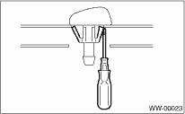

WIPER AND WASHER SYSTEMS > Front Washer Nozzle
REMOVAL
1. Remove the washer hose from the washer nozzle.
2. Open the clips on the underside of the front hood with a thin screwdriver or other tool, and remove the washer nozzle.
